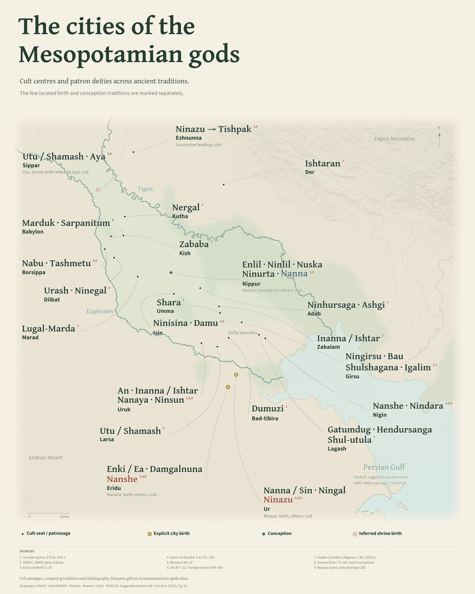

The cities of the Mesopotamian gods
Cult centres and patron deities across ancient traditions. The map follows the gods’ temples, civic roles and local associations. The few located birth and conception traditions are marked separately. The catalogue distinguishes Sumerian traditions, Akkadian literary accounts and later Babylonian theology.

Research catalogue
Names are not interchangeable merely because later theologians associated them. Gula, Ninkarrak, Ninisina and Bau retain distinct records; identifications are qualified within each. Cosmic Apsu is not pinned to Eridu or Babylon. Dilmun is a changing Gulf region. The later births in Enki and Ninhursaga are not securely located on Bahrain; Dina Katz’s competing geographical interpretation is retained.
Select a deity to inspect the sources.
Research JSON · Site coordinates · Poster composition JSON · Geographic provenance manifest · Historical Gulf source and calibration · Flood / historical comparison